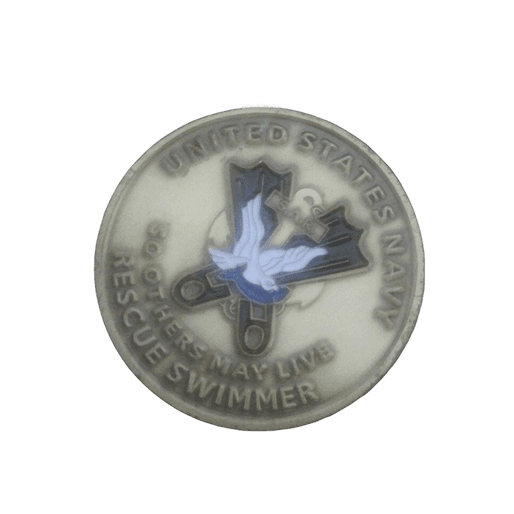
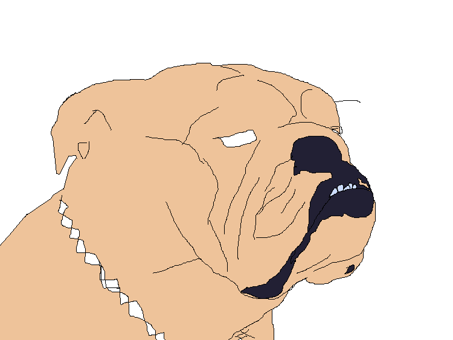
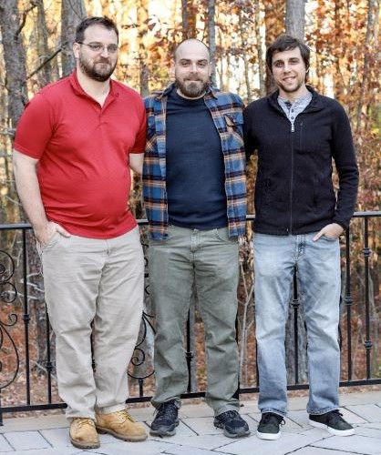

|
|
|
| |
Hello, I am Jonathan. I have a limited background in CSC and HTML. All I had when I was little was a Green and black screen computer consule and all you could do with it was code on. That is what I did all day was type line by line code out on that green and black screen that would destroy your eyesight within minutes. The best thing I ever created with code was a house that had smoke coming from the chimney when I was 4 years old that was 34 years ago. After many attempts at trying other things out in life I have decided to go back trying my luck with CSC and learn to code again maybe I will pick up enough of it like I did when I was little so that one day I could take over the world one day with it.
 When I was in the Service I trained to be a Surface Rescue Swimmer. Like the CoastGuards Swimmer, but for the ships. I have a love of the water, but it doesnt love me back. I love to swim and I swim often, but not as much as i did when I was younger.
 My main interest right now is to learn coding so that I can assist my brother with his small start up GareGamesInc some day soon. He is the Lead Developer of it all currently. We both have a strong background for loving the video games and how they are created. Unfortunately, I have let my coding skills go to the way side all these years. I am hoping to soon correct that and help with the coding of his future games.
 click on the link to see where CSC could take you. Its not me, but my brothers. he has 10+ years of coding, so give him a follow and watch and you might learn something new.
click on the link to see where CSC could take you. Its not me, but my brothers. he has 10+ years of coding, so give him a follow and watch and you might learn something new.
 Family Matters, Keep it Real. Stay in Touch!